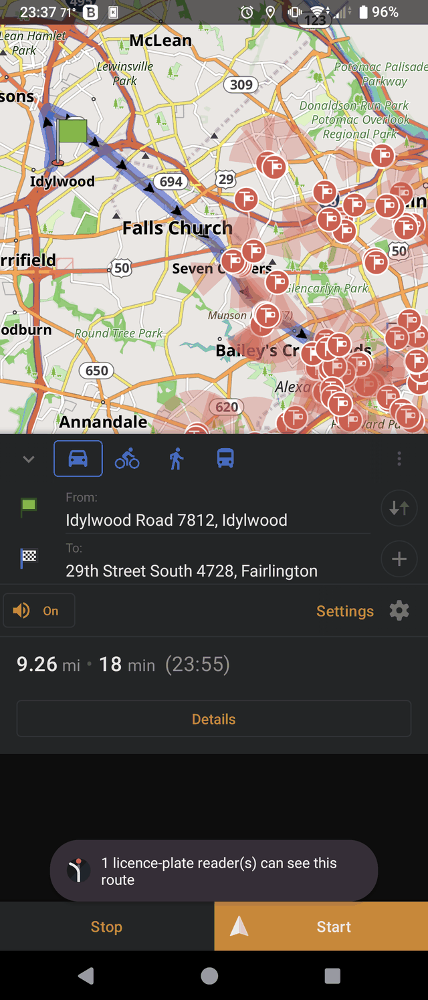
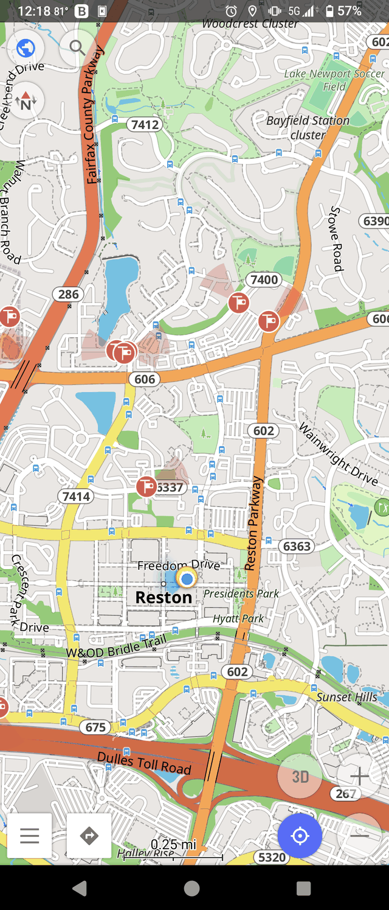
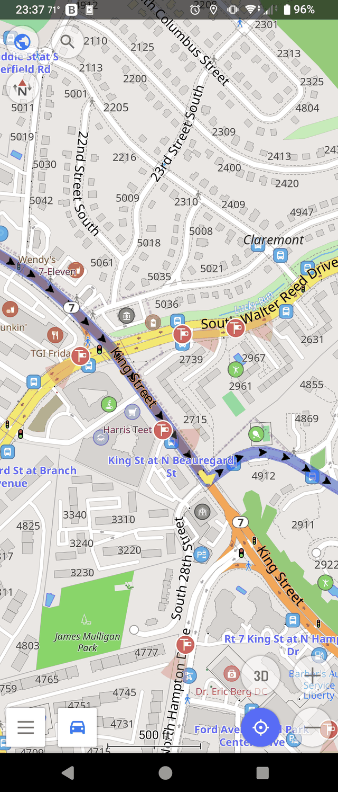

On by default
First launch points the driving profile at the public routing engine at Strong avoidance. Open the app, enter where you're going, and the route already bends around camera fields of view. The only thing you touch is the destination.
Navigation that routes around automated licence-plate readers. An ordinary route request — an address, a destination — with one extra constraint: prefer roads that no ALPR camera can actually see. Cameras are directional wedges, not circles. You detour only where one is really looking.

Trames (Latin): byways, side roads. · Debug-signed APK — sideload; no Play Store. Read the README.
A reader pointed at northbound traffic says nothing about the southbound carriageway. Treat it as a circle and the router detours around roads nobody is being read on. TRAMES models every camera as a cone pointing where it actually looks, and asks for the fastest path that crosses none of them.

Each camera becomes a wedge aimed the way it faces. A route that passes a reader on the far carriageway isn't penalised — it was never seen.
120,838 camera cones are compiled into GraphHopper's spatial index
at import as one area, alpr. A request just references it
— {"if": "in_alpr", "multiply_by": 0.05} — no geometry
attached, so the payload stays tiny.
Because the penalty rides on each request, avoidance strength stays a per-route slider instead of being frozen into the graph. No forked routing engine required.
The map draws the same cameras the router steers around — from the server's own snapshot, so the picture matches the route. Overpass is a fallback, not the only source.
Avoidance is the whole point of the app, so it is no longer opt-in homework. A fresh install sets itself up on first launch — no engine to create, no URL to paste, no setting to find.
First launch points the driving profile at the public routing engine at Strong avoidance. Open the app, enter where you're going, and the route already bends around camera fields of view. The only thing you touch is the destination.
Turn avoidance down, off, or up — the app seeds itself exactly once, so your choice is never overwritten on the next launch.
Package org.soulstone.trames — a distinct app, not a
replacement. Keep your OsmAnd exactly as it is.
Point the engine at your own GraphHopper if you'd rather. Upgraders who configured one by hand keep it, custom strength and all.
TRAMES is a fork of OsmAnd, so turn-by-turn voice guidance, offline maps, lane hints and the rest are all there — the avoidance is one honest constraint layered onto a mature navigation app, not a demo.
The levels aren't evenly spaced, and that's deliberate: measured on the continental graph, everything from off down to about a third leaves most routes unchanged — a penalty can't outweigh a highway. So the useful range is packed where it actually bites, and the effective strength shifts with how dense the cameras are around you.
Fastest route. No avoidance — TRAMES navigates like any other app.
Avoid readers only where the detour is nearly free.
A balanced trade — dodge most cameras for a modest cost.
Avoid readers wherever a reasonable alternative exists. Where TRAMES ships.
Avoid every camera it can find a way around, whatever the extra time.
We routed 17,580 real home–work commutes — drawn from Census LEHD LODES in proportion to how many workers actually make each trip, across 15 states — twice each: once normally, once avoiding the fields of view of 120,838 mapped ALPR installations.
A metropolitan grid always offers a parallel street a block over; a rural route often has one road and no alternative. So the burden of refusal falls hardest on the drivers with the fewest cameras to refuse. The full method, limitations, and the equity findings are in the paper. Read the paper (PDF) →
Real routes over real ALPR data — the avoided cluster, the directional markers, and turn-by-turn guidance that already went the quiet way.

Unlike its fully-offline siblings, a router has to know where you're starting and where you're going — that's what routing is. So rather than pretend otherwise, here's the whole posture.
To compute a route, the app sends your start and destination coordinates to the routing server. That's the price of online routing — and the reason the self-host option exists: point TRAMES at your own GraphHopper and no third party sees anything.
The public endpoint is open — no sign-up, no API key, nothing tying a request to you. A key baked into a public APK was never real security, so there isn't one.
The map layer pulls cameras for the area you're viewing from the server's own snapshot — the same data the routing graph is built from. No profile, no history.
The client, the server, and the study are all public. Camera data is © OpenStreetMap contributors under ODbL, largely mapped by the DeFlock community.
The APK is signed with the public Android debug key. Anyone can build one that looks identical, so the signature proves nothing about who built it. Verify the SHA-256 on the release, or build from source.
Build from source, read the paper, or file issues: github.com/KaraZajac/TRAMES · the paper